Aula8-67: Ondas estacionárias
|
São ondas que, sofrendo concomitantemente os fenômenos da reflexão e interferência, formam um padrão de vibração estático. Estudaremos, aqui, ondas estacionárias em cordas e em tubos. |
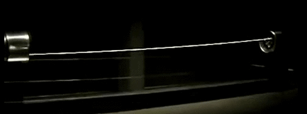 |
Ondas estacionárias em cordas
|
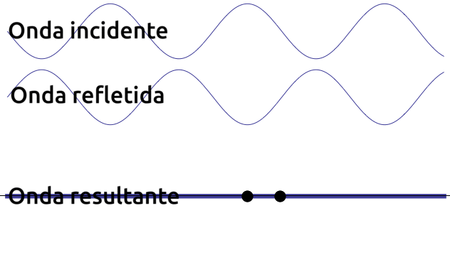 |
A imagem ao lado ilustra uma onda que incide ininterruptamente sobre um anteparo refletor (não ilustrado) que gera ininterruptamente uma onda refletida. A onda progressiva (incidente) e a onda regressiva (refletiva) se somam pelo princípio da superposição de ondas formando um padrão de onda estacionário. |
|
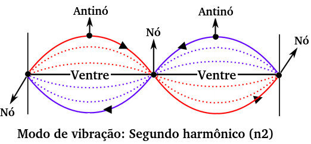 |
Nó: ponto da onda que, durante a sua oscilação, permanece imóvel; Antinó: ponto que se move com a maior amplitude possível; Ventre: Região contida entre dos nós adjacentes; Modo de vibração: indica quantos ventres existem na onda. |
➔ RELAÇÃO ENTRE COMPRIMENTO DE CORDA (l), FREQUÊNCIA (f) E MODOS DE VIBRAÇÃO (n)
Observe que, analisando as figuras, é possível se extrair as seguintes relações entre os supracitados parâmetros:
|
⚛ Harmônico fundamental (n1) |
⚛ Segundo harmônico (n2) |
⚛ Terceiro harmônico (n3) |
⚛ Quarto harmônico (n4) |
|||
|
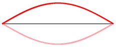 |
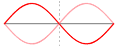 |
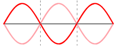 |
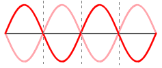 |
Relação extraída:
, substituindo na equação fundamental da ondulatória…
➔ APLICAÇÕES DE ONDAS ESTACIONÁRIAS EM CORDAS
O conhecimento de ondas estacionários é amplamente explorado na ciência musical, pois os instrumentos de corda são projetados levando em consideração estes estudos. Como por exemplo, no caso do violão, o comprimento do braço, a disposição de trastes, a densidade e tração nas cordas, relacionam-se de modo a formar harmônicos específicos, que geram sons mais agradáveis aos nossos ouvidos.
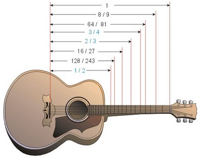
Ondas estacionárias em tubos
O fenômeno é exatamente o mesmo estudado para ondas estacionárias em cordas, o que o torna particular é o fato de que, em se tratando de tubos fechados, não se pode gerar todos os harmônicos que são gerados em cordas.
-
Ondas estacionárias em tubos abertos: Neste caso, com tubo de extremidades abertas, pode-se, assim como nas cordas, obter-se qualquer harmônico. Veja a análise abaixo.
➔ RELAÇÃO ENTRE COMPRIMENTO DE CORDA (l), FREQUÊNCIA (f) E MODOS DE VIBRAÇÃO (n)
Observe que, analisando as figuras, é possível se extrair as seguintes relações entre os dois parâmetros:
⚛ Harmônico fundamental
(n1)
⚛ Segundo harmônico
(n2)
⚛ Terceiro harmônico
(n3)
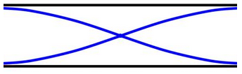
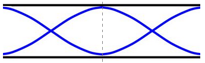
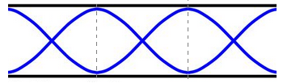
Observe que as relações extraídas para os tubos abertos são idênticas àquelas auferidas para cordas, logo as consequências serão, também, as mesmas:
, substituindo na equação fundamental da ondulatória…
-
Ondas estacionárias em tubos fechados: Neste caso, com tubo de uma extremidade fechada, diferentemente das cordas e dos tubos de extremidades abertas, não se pode obter qualquer harmônicos; mas só os ímpares. Veja a análise abaixo.
➔ RELAÇÃO ENTRE COMPRIMENTO DE CORDA (l), FREQUÊNCIA (f) E MODOS DE VIBRAÇÃO (n)
Diferentemente das cordas, em que eram permitidos qualquer harmônico (n podia ser qualquer valor real: n1, n2, n3, n4…), com tubos de extremidade fechada só se pode obter harmônicos impares (n1, n3, n5, n7...), observe o esquema abaixo:
⚛ Harmônico fundamental
(n1)
⚛ Segundo harmônico
(n2)
⚛ Terceiro harmônico
(n3)
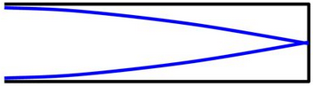
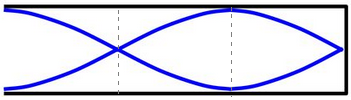
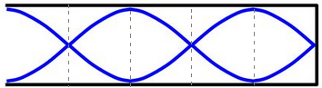
Relação extraída:
, substituindo na equação fundamental da ondulatória…
➔ APLICAÇÕES DE ONDAS ESTACIONÁRIAS EM TUBOS
As aplicações mais notórias de ondas estacionária em tubos também são as que encontramos no âmbito musical, nos metais, instrumentos de sopro.
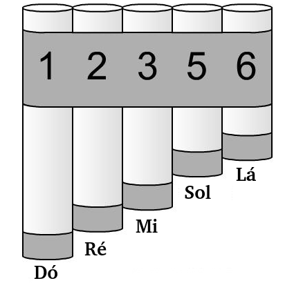